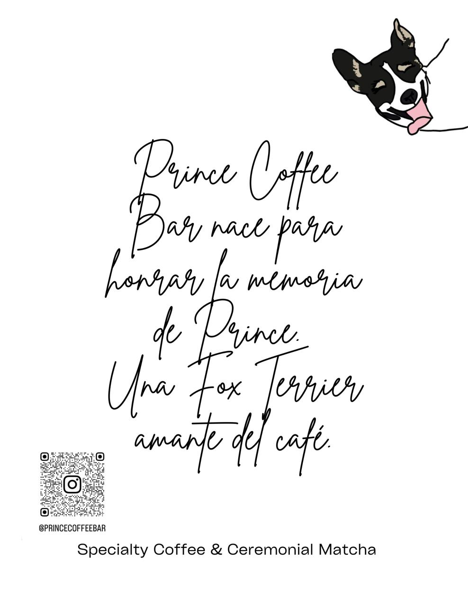

Nuestra Historia

Desde nuestros humildes comienzos, PrinceCoffeeBar ha sido más que una simple cafetería. Fundada con la pasión por el café de calidad y el deseo de crear un espacio donde cada taza cuente una historia.
Nuestro viaje comenzó con la visión de ofrecer experiencias únicas a través del café, combinando tradición e innovación en cada preparación. Cada grano que seleccionamos, cada método que perfeccionamos, refleja nuestro compromiso con la excelencia.
Hoy, PrinceCoffeeBar continúa siendo un lugar donde los amantes del café se reúnen para disfrutar de momentos especiales, creando recuerdos que perduran más allá de la última gota.